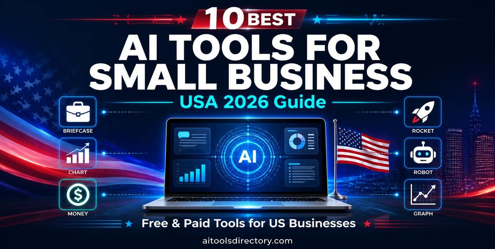
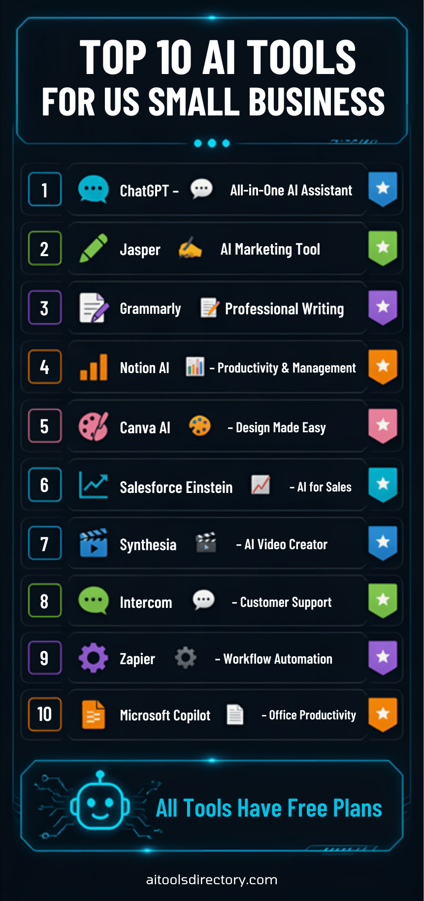

Published: September 23, 2026 | Reading Time: 12 minutes
📢 Sponsored

Small businesses in the United States are constantly looking for ways to compete with larger corporations. In 2026, artificial intelligence (AI) has become the great equalizer, giving small business owners access to powerful tools that were once only available to big companies with massive budgets.
Whether you run a local retail store, an online e-commerce brand, or a consulting agency, the right AI tools can help you automate tasks, improve customer service, boost marketing efforts, and increase profits. But with hundreds of AI tools available, choosing the right ones for your business can be overwhelming.
In this guide, we've curated the 10 best AI tools for small businesses in the USA for 2026. These tools are affordable, easy to use, and proven to deliver results. Let's dive in.
AI is no longer a luxury for small businesses — it's a necessity. Here are three key reasons why:
Category: General AI Assistant | Pricing: Free / $20 per month
ChatGPT is the most versatile AI tool for small businesses. It can write emails, generate marketing content, answer customer questions, brainstorm ideas, and even help with coding. Whether you're a solopreneur or managing a team, ChatGPT can save you hours every single day.
Example: A small marketing agency in New York uses ChatGPT to draft social media captions, email newsletters, and blog outlines. What used to take 10 hours now takes just 2 hours with AI assistance.
Best for: Content creation, customer support, brainstorming, research, and coding.
Category: Marketing & Content | Pricing: $39 per month
Jasper is an AI writing tool specifically designed for marketers. It can create blog posts, social media content, ad copy, landing pages, and email campaigns in seconds. Jasper also supports multiple languages and brand voice customization.
Example: A SaaS company in San Francisco uses Jasper to write product descriptions, email sequences, and ad copy. This has reduced their content creation time by 60%.
Best for: Content marketing, email marketing, ad copy, social media management.
Category: Writing & Editing | Pricing: $12.50 per member/month
Grammarly Business ensures that every email, document, and message your team sends is clear, professional, and error-free. It checks grammar, spelling, tone, and clarity — helping your business maintain a professional image.
Example: A consulting firm in Chicago uses Grammarly Business to ensure all client emails and proposals are polished and professional. This has improved their client communication and reduced misunderstandings.
Best for: Email communication, proposal writing, content editing, team collaboration.
Category: Productivity | Pricing: Free / $10 per month
Notion AI combines note-taking, project management, and AI assistance in one powerful tool. It can help you organize tasks, manage projects, summarize meetings, and generate ideas. It's perfect for teams that need to stay organized and productive.
Example: A remote team in Austin uses Notion AI to manage projects, track progress, and collaborate on documents. This has improved their workflow efficiency by 40%.
Best for: Project management, team collaboration, note-taking, workflow automation.
Category: Design & Creativity | Pricing: Free / $12.99 per month
Canva AI uses artificial intelligence to help you create professional-looking designs — even if you have zero design experience. You can create social media posts, presentations, flyers, logos, and more with AI-powered templates and tools.
Example: A small retail business in Miami uses Canva AI to create social media content and promotional materials. This has saved them thousands of dollars in design costs.
Best for: Social media design, marketing materials, presentations, branding.

📢 Sponsored
Category: Sales & CRM | Pricing: Custom pricing
Salesforce Einstein is an AI-powered CRM tool that helps sales teams close deals faster. It analyzes customer data, predicts buying behavior, and recommends the best next steps. It's ideal for businesses with large sales teams.
Example: A B2B software company in Seattle uses Salesforce Einstein to identify which leads are most likely to convert. This has increased their sales conversion rate by 30%.
Best for: Sales management, lead scoring, customer insights, forecasting.
Category: Video Marketing | Pricing: $30 per month
Synthesia lets you create professional videos with AI avatars. Just type your script, choose an avatar, and the AI generates a video. No cameras, no actors — just you and your ideas. Perfect for training videos, marketing content, and product demos.
Example: An e-commerce business in Los Angeles uses Synthesia to create product demo videos and explainer content. This has reduced their video production costs by 80%.
Best for: Explainer videos, training content, marketing videos, product demos.
Category: Customer Support | Pricing: $39 per month
Intercom uses AI to automate customer support. It can answer common questions, route tickets to the right teams, and even resolve issues without human intervention. This helps businesses provide 24/7 support without hiring a massive team.
Example: A SaaS company in Boston uses Intercom to handle customer inquiries. This has reduced their average response time from 8 hours to 2 minutes.
Best for: Customer support, live chat, ticketing, user engagement.
Category: Automation | Pricing: Free / $29 per month
Zapier connects your apps and automates repetitive tasks. It uses AI to create workflows (called Zaps) that automatically move data between apps, send emails, and trigger actions. This saves businesses hours of manual work every week.
Example: A digital agency in Denver uses Zapier to automatically add new leads from Facebook to their CRM and send welcome emails. This has saved them 15 hours per week.
Best for: Workflow automation, task automation, app integration, data syncing.
Category: Productivity | Pricing: $30 per month
Microsoft Copilot is integrated into Microsoft 365 apps like Word, Excel, PowerPoint, and Outlook. It helps you write documents, analyze data, create presentations, and manage emails — all with AI assistance. It's perfect for businesses that rely on Microsoft tools.
Example: A corporate team in Dallas uses Microsoft Copilot to create presentations and analyze sales data. This has reduced their report creation time by 50%.
Best for: Document creation, data analysis, presentations, email management.
The 10 best AI tools for small business in USA for 2026 we've shared in this guide can help you automate tasks, improve customer service, boost productivity, and increase profits. Whether you're a freelancer, entrepreneur, or running a large team, these tools can save you hours and help you grow your business.
💡 Pro Tip: Don't try to adopt all tools at once. Choose one, master it, and then add another. This approach ensures you get maximum value from each tool.
Ready to explore more AI tools? Visit our complete AI Tools Directory:
📢 Sponsored
ChatGPT and Canva AI are the best for small businesses because they are free and easy to use. Both offer powerful features that can help with content creation, design, and productivity.
Most tools offer free versions with limited features. For advanced features, you can upgrade to paid plans. The free versions are still powerful enough for small businesses.
Absolutely! All tools mentioned in this guide are user-friendly and designed for non-technical users. You don't need any technical skills to get started.
ChatGPT offers a free version (GPT-3.5) and a paid version (GPT-4) for $20 per month. The free version is powerful enough for most business needs.
Jasper is the best AI tool for marketing. It helps with blog posts, social media content, ad copy, and email campaigns. Canva AI is also great for creating marketing visuals.
Results vary depending on the tool and how you use it. Most users see improvements in productivity and efficiency within the first few weeks of using these tools.
Mahnoor is the founder of AI Tools Directory. She is passionate about AI technology and helping people discover the best AI tools for productivity, writing, coding, and design.